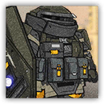
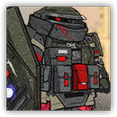

游击队盾卫 Guerrilla Shieldguard
近战 物理；精英 任意

|  |
爱国者的精锐防卫战士。追随着爱国者的意志，盾卫是“感染者之盾”的坚实壁垒。拥有高性能的防护装甲，在场时容易吸引敌人攻击自己，以此来掩护战友。 |
游击队盾卫丨Guerrilla Shieldguard
中型或大型类人（任意），守序中立
AC 21
先攻 -1（9）
HP 133（14d8+70）
速度 30 尺
| 调整 | 豁免 | ||
|---|---|---|---|
| 力量 | 20 | +5 | +9 |
| 智力 | 11 | +0 | +0 |
| 调整 | 豁免 | ||
|---|---|---|---|
| 敏捷 | 9 | -1 | -1 |
| 感知 | 17 | +3 | +3 |
| 调整 | 豁免 | ||
|---|---|---|---|
| 体质 | 20 | +5 | +9 |
| 魅力 | 11 | +0 | +0 |
技能 运动+9，求生+7，察觉+7，游说+4，威吓+4
抗性 雷鸣，寒冷
装备 盾牌，板甲
感官 黑暗视觉60尺；被动察觉17
语言 通用语，乌萨斯语，萨卡兹语
CR 9 (XP 5,000；PB +4)
特质 Traits
魔法抗性 Magic Resistence。游击队盾卫为抵抗法术和其它魔法效应而作的豁免检定具有优势。
重甲要塞 Heavy Fortress。游击队盾卫受到的任何穿刺、挥砍、钝击伤害具有-4减值。
动作 Actions
多重攻击 Multiattack。游击队盾卫发动两次盾击攻击。
盾击 Shield Bash。近战攻击检定：+9，触及5尺。命中：26（6d6+5）钝击伤害，且若目标体型不大于中型则应击倒地。
反应 Reactions
守护 Guardian。触发：游击队盾卫15尺内的一个AC低于自己的盟友将受到远程攻击。响应：直到本回合结束前，所有对该盟友的远程攻击具有劣势。
游击队盾卫组长 Guerrilla Shieldguard Leader
近战 物理；精英 任意
|  |
爱国者精锐防卫战士中的菁英。经过长期的磨炼，盾卫组长穿上了比普通防护装甲更厚重的装备，在场时容易吸引敌人攻击自己，以此来掩护战友。 |
游击队盾卫组长丨Guerrilla Shieldguard Leader
中型或大型类人（任意），守序中立
AC 22
先攻 +6（16）
HP 190 (20d8+100)
速度 30 尺
| 调整 | 豁免 | ||
|---|---|---|---|
| 力量 | 21 | +5 | +10 |
| 智力 | 14 | +2 | +2 |
| 调整 | 豁免 | ||
|---|---|---|---|
| 敏捷 | 12 | +1 | +1 |
| 感知 | 18 | +4 | +4 |
| 调整 | 豁免 | ||
|---|---|---|---|
| 体质 | 21 | +5 | +10 |
| 魅力 | 12 | +1 | +1 |
技能 运动+10，求生+9，察觉+9，游说+6，威吓+6
抗性 雷鸣，寒冷
装备 盾牌，板甲
感官 黑暗视觉60尺；被动察觉19
语言 通用语，乌萨斯语，萨卡兹语
CR 13 (XP 3,900；PB +5)
特质 Traits
魔法抗性 Magic Resistence。游击队盾卫为抵抗法术和其它魔法效应而作的豁免检定具有优势。
重甲要塞 Heavy Fortress。游击队盾卫受到的任何穿刺、挥砍、钝击伤害具有-5减值。
动作 Actions
多重攻击 Multiattack。游击队盾卫发动两次盾击攻击。
盾击 Shield Bash。近战攻击检定：+10，触及5尺。命中：33（8d6+5）钝击伤害，且若目标体型不大于中型则应击倒地。
反应 Reactions
守护 Guardian。触发：游击队盾卫组长15尺内的一个AC低于自己的盟友将受到远程攻击。响应：直到本回合结束前，所有对该盟友的远程攻击具有劣势。